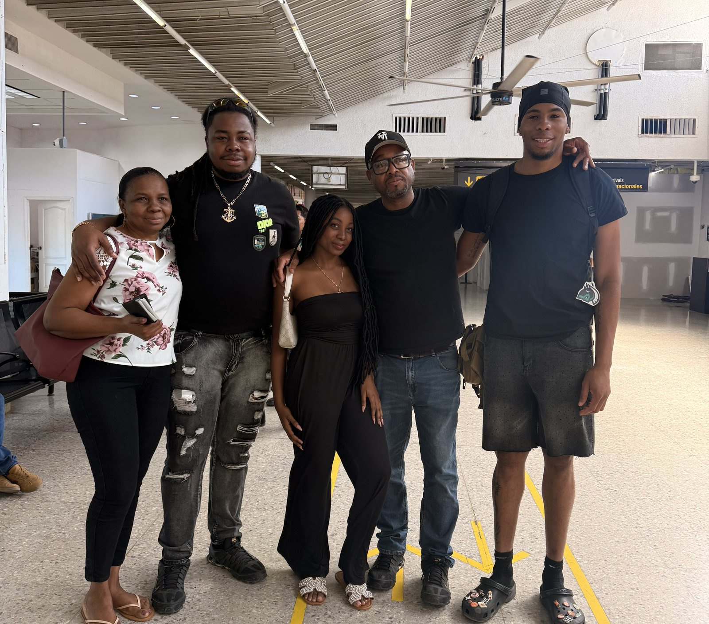

Our story
Named after the island we lost.
Yurumein is what our people call St. Vincent — the island the Garífuna were exiled from in 1797. We put that name over the door on purpose.
1797
Punta Gorda is where the canoes landed.
After the exile from Yurumein, our ancestors came ashore on this coast in dugout canoes and founded Punta Gorda — the first Garífuna settlement in Honduras, and still the oldest. Everything Garífuna in this country starts on the beach a short walk from our door.
Every 12th of April the village re-enacts the landing. The canoes come in loaded with cassava and plantain, the drums go all day, and the whole east end turns out. If you can plan your visit around one day of the year, plan it around that one.
We have been here the 229 years since. This is not a theme, and the food is not a performance — it is what the family eats.


The family
One kitchen, one family, no manager.
Yurumei is family-run, and on any given day the person who cooked your food is the person who owns the place. That is why the machuca takes forty minutes and why it tastes like it does.
The same family runs Martinez East End Tours, which brings visitors across the island to the east end — the reef, the mangroves, and Punta Gorda. Guests who come out here on a tour usually end up eating with us, which is how it should be.
The collection
A museum with tables in it.
Drums, mortars, dugout tools, conch shells carved with our name, photographs of the elders, a map of the Ruta Garífuna, and flags left behind by guests from all over the world.
Filmed in the village. Tap to play — they are short.
Photographs